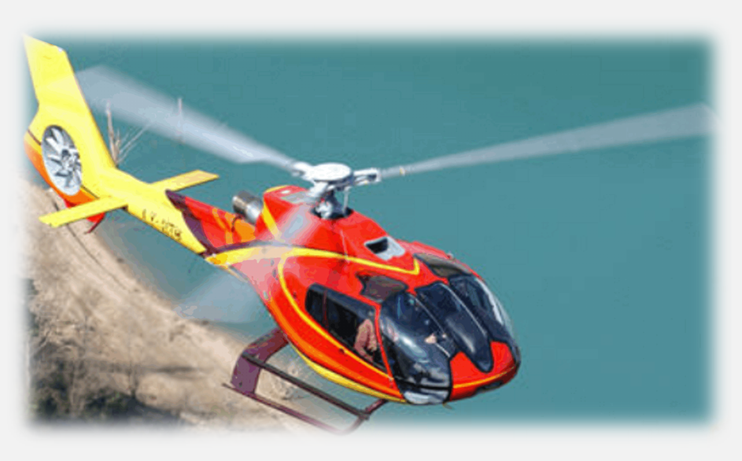
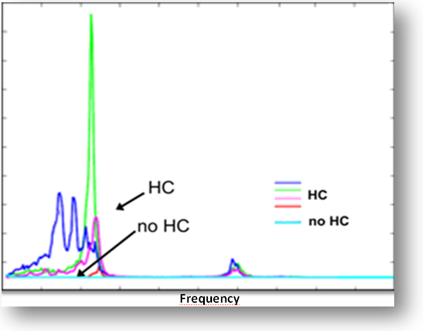
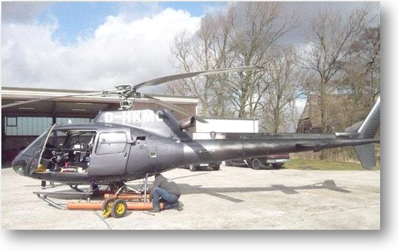
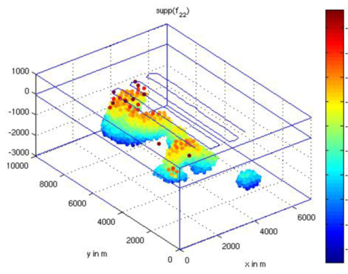

| Petro-Drill Global is in an exclusive partnership with Geo Exploration Services a German based Hydrocarbon exploration survey company with vast knowledge and experience in detection of Oil and Gas and Solid minerals deposits. This advanced method of exploration is very accurate, precise and very affordable with a quick turn around time of results delivery without harming the environment nor obtaining environmental permits and clearance as is observable with other on the ground exploration seismic systems. | ||
Onshore and Offshore Exploration of Oil & Gas ReservoirsHYDROSCAN® is an innovative helicopter-based passive
seismo- For all tasks the HC reservoir identification capability includes conventional (anticlinal) traps as well as unconventional non-structural related traps, like occurrences in stratigraphic closures, fault zones, sub-salt and sub-basalt. |

|
|
Airborne Seismo-
|
  Seismo-EM system equipped at helicopter  3D imaging enables mean depth and multi-reservoir indication. |
Survey & DeliverablesThe HYDROSCAN airborne system consists of a high performance measuring instrumentation as well as programs for data acquisition, data processing and 3D inverse modelling. The exploration procedure
comprises: |
Advantages &
|
Case Example -
|
Case Example -
|